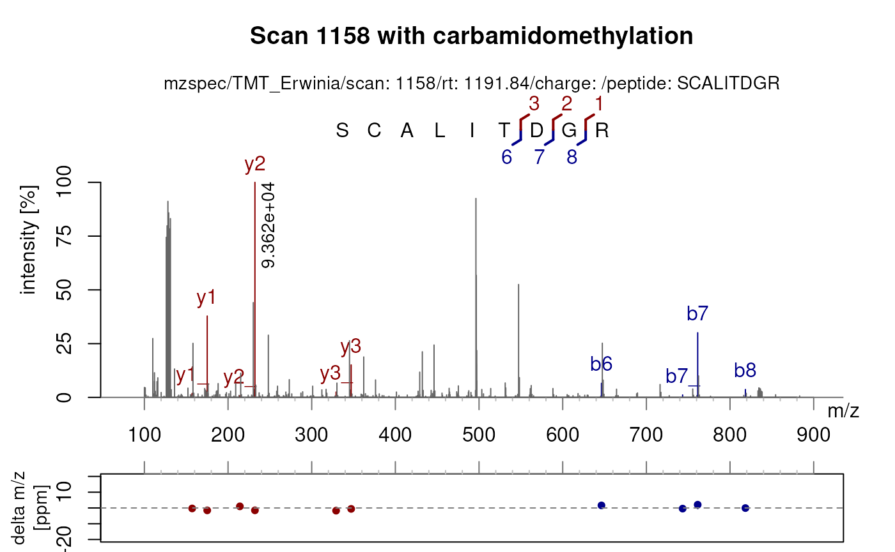
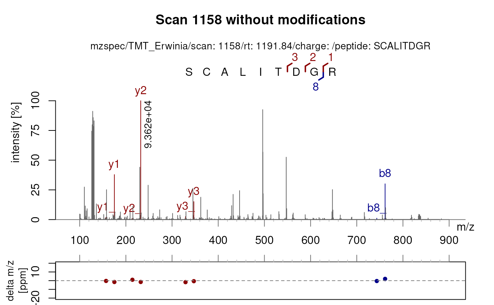

Package: PSMatch
Authors: Laurent Gatto [aut, cre] (ORCID: https://orcid.org/0000-0002-1520-2268), Johannes Rainer
[aut] (ORCID: https://orcid.org/0000-0002-6977-7147), Sebastian Gibb
[aut] (ORCID: https://orcid.org/0000-0001-7406-4443), Samuel Wieczorek
[ctb], Thomas Burger [ctb], Guillaume Deflandre [ctb] (ORCID: https://orcid.org/0009-0008-1257-2416)
Last modified: 2025-08-02 07:09:52.050822
Compiled: Sat Aug 2 07:24:18 2025
Introduction
This vignette is one among several illustrating how to use the
PSMatch package, focusing on the calculation and
visualisation of MS2 fragment ions. For a general overview of the
package, see the PSMatch package manual page
(?PSMatch) and references therein.
To illustrate this vignette, we will import and merge raw and identification data from the msdata. For details about this section, please visit the Spectra package webpage.
Load the raw MS data:
(spf <- msdata::proteomics(pattern = "2014", full.names = TRUE))## [1] "/__w/_temp/Library/msdata/proteomics/TMT_Erwinia_1uLSike_Top10HCD_isol2_45stepped_60min_01-20141210.mzML.gz"Load the identification data:
(idf <- msdata::ident(pattern = "2014", full.names = TRUE))## [1] "/__w/_temp/Library/msdata/ident/TMT_Erwinia_1uLSike_Top10HCD_isol2_45stepped_60min_01-20141210.mzid"
id <- PSM(idf) |> filterPSMs()## Starting with 5802 PSMs:## Removed 2896 decoy hits.## Removed 155 PSMs with rank > 1.## Removed 85 shared peptides.## 2666 PSMs left.
id## PSM with 2666 rows and 35 columns.
## names(35): sequence spectrumID ... subReplacementResidue subLocationMerge both:
sp <- joinSpectraData(sp, id, by.x = "spectrumId", by.y = "spectrumID")## Warning in joinSpectraData(sp, id, by.x = "spectrumId", by.y = "spectrumID"):
## Duplicates found in the 'y' key. Only last instance will be kept!
sp## MSn data (Spectra) with 7534 spectra in a MsBackendMzR backend:
## msLevel rtime scanIndex
## <integer> <numeric> <integer>
## 1 1 0.4584 1
## 2 1 0.9725 2
## 3 1 1.8524 3
## 4 1 2.7424 4
## 5 1 3.6124 5
## ... ... ... ...
## 7530 2 3600.47 7530
## 7531 2 3600.83 7531
## 7532 2 3601.18 7532
## 7533 2 3601.57 7533
## 7534 2 3601.98 7534
## ... 68 more variables/columns.
##
## file(s):
## TMT_Erwinia_1uLSike_Top10HCD_isol2_45stepped_60min_01-20141210.mzML.gzIn this example, we are going to focus the MS2 scan with index 1158 and its parent MS1 scan (index 1148, selected automatically with the filterPrecursorScan() function).
sp1158 <- filterPrecursorScan(sp, 1158)
plotSpectra(sp1158[1], xlim = c(400, 600))
abline(v = precursorMz(sp1158)[2], col = "red", lty = "dotted")
Calculating fragment ions
The MS2 scan was matched to the sequence SCALITDGR.
sp1158$sequence## [1] NA "SCALITDGR"The calculateFragments() simply takes a peptide sequence
as input and returns a data.frame with the fragment
sequences, M/Z, ion type, charge, position and the peptide sequence of
the parent ion.
calculateFragments(sp1158$sequence[2])## Fixed modifications used: C=57.02146
## Variable modifications used: None## mz ion type pos z seq peptide
## 1 88.03931 b1 b 1 1 S SCALITDGR
## 2 248.06996 b2 b 2 1 SC SCALITDGR
## 3 319.10707 b3 b 3 1 SCA SCALITDGR
## 4 432.19113 b4 b 4 1 SCAL SCALITDGR
## 5 545.27519 b5 b 5 1 SCALI SCALITDGR
## 6 646.32287 b6 b 6 1 SCALIT SCALITDGR
## 7 761.34981 b7 b 7 1 SCALITD SCALITDGR
## 8 818.37127 b8 b 8 1 SCALITDG SCALITDGR
## 9 175.11895 y1 y 1 1 R SCALITDGR
## 10 232.14041 y2 y 2 1 GR SCALITDGR
## 11 347.16735 y3 y 3 1 DGR SCALITDGR
## 12 448.21503 y4 y 4 1 TDGR SCALITDGR
## 13 561.29909 y5 y 5 1 ITDGR SCALITDGR
## 14 674.38315 y6 y 6 1 LITDGR SCALITDGR
## 15 745.42026 y7 y 7 1 ALITDGR SCALITDGR
## 16 905.45091 y8 y 8 1 CALITDGR SCALITDGR
## 17 743.33924 b7_ b_ 7 1 SCALITD SCALITDGR
## 18 800.36070 b8_ b_ 8 1 SCALITDG SCALITDGR
## 19 329.15679 y3_ y_ 3 1 DGR SCALITDGR
## 20 543.28853 y5_ y_ 5 1 ITDGR SCALITDGR
## 21 656.37259 y6_ y_ 6 1 LITDGR SCALITDGR
## 22 727.40970 y7_ y_ 7 1 ALITDGR SCALITDGR
## 23 887.44035 y8_ y_ 8 1 CALITDGR SCALITDGR
## 24 157.10839 y1_ y_ 1 1 R SCALITDGR
## 25 214.12985 y2_ y_ 2 1 GR SCALITDGR
## 26 430.20447 y4_ y_ 4 1 TDGR SCALITDGRThe function also allows to generate fragment sequences with fixed
and/or variable modifications. By default,
fixed_modifications = c(C = 57.02146) for
carbamidomethylation of cysteine.
With variable modifications, multiple sets of fragments are
generated. The fragments can be traced to their parent ion by checking
the peptide column. A fragment can have multiple
modifications.
calculateFragments(sp1158$sequence[2],
fixed_modifications = NULL,
variable_modifications = c(C = 57.02146,
T = 79.966))## Fixed modifications used: None
## Variable modifications used: C=57.02146, T=79.966## mz ion type pos z seq peptide
## 1 88.03931 b1 b 1 1 S SCALITDGR
## 2 191.04850 b2 b 2 1 SC SCALITDGR
## 3 262.08561 b3 b 3 1 SCA SCALITDGR
## 4 375.16967 b4 b 4 1 SCAL SCALITDGR
## 5 488.25373 b5 b 5 1 SCALI SCALITDGR
## 6 589.30141 b6 b 6 1 SCALIT SCALITDGR
## 7 704.32835 b7 b 7 1 SCALITD SCALITDGR
## 8 761.34981 b8 b 8 1 SCALITDG SCALITDGR
## 9 175.11895 y1 y 1 1 R SCALITDGR
## 10 232.14041 y2 y 2 1 GR SCALITDGR
## 11 347.16735 y3 y 3 1 DGR SCALITDGR
## 12 448.21503 y4 y 4 1 TDGR SCALITDGR
## 13 561.29909 y5 y 5 1 ITDGR SCALITDGR
## 14 674.38315 y6 y 6 1 LITDGR SCALITDGR
## 15 745.42026 y7 y 7 1 ALITDGR SCALITDGR
## 16 848.42945 y8 y 8 1 CALITDGR SCALITDGR
## 17 686.31778 b7_ b_ 7 1 SCALITD SCALITDGR
## 18 743.33924 b8_ b_ 8 1 SCALITDG SCALITDGR
## 19 329.15679 y3_ y_ 3 1 DGR SCALITDGR
## 20 543.28853 y5_ y_ 5 1 ITDGR SCALITDGR
## 21 656.37259 y6_ y_ 6 1 LITDGR SCALITDGR
## 22 727.40970 y7_ y_ 7 1 ALITDGR SCALITDGR
## 23 830.41889 y8_ y_ 8 1 CALITDGR SCALITDGR
## 24 157.10839 y1_ y_ 1 1 R SCALITDGR
## 25 214.12985 y2_ y_ 2 1 GR SCALITDGR
## 26 430.20447 y4_ y_ 4 1 TDGR SCALITDGR
## 27 88.03931 b1 b 1 1 S SC[57.02146]ALITDGR
## 28 248.06996 b2 b 2 1 SC SC[57.02146]ALITDGR
## 29 319.10707 b3 b 3 1 SCA SC[57.02146]ALITDGR
## 30 432.19113 b4 b 4 1 SCAL SC[57.02146]ALITDGR
## 31 545.27519 b5 b 5 1 SCALI SC[57.02146]ALITDGR
## 32 646.32287 b6 b 6 1 SCALIT SC[57.02146]ALITDGR
## 33 761.34981 b7 b 7 1 SCALITD SC[57.02146]ALITDGR
## 34 818.37127 b8 b 8 1 SCALITDG SC[57.02146]ALITDGR
## 35 175.11895 y1 y 1 1 R SC[57.02146]ALITDGR
## 36 232.14041 y2 y 2 1 GR SC[57.02146]ALITDGR
## 37 347.16735 y3 y 3 1 DGR SC[57.02146]ALITDGR
## 38 448.21503 y4 y 4 1 TDGR SC[57.02146]ALITDGR
## 39 561.29909 y5 y 5 1 ITDGR SC[57.02146]ALITDGR
## 40 674.38315 y6 y 6 1 LITDGR SC[57.02146]ALITDGR
## 41 745.42026 y7 y 7 1 ALITDGR SC[57.02146]ALITDGR
## 42 905.45091 y8 y 8 1 CALITDGR SC[57.02146]ALITDGR
## 43 743.33924 b7_ b_ 7 1 SCALITD SC[57.02146]ALITDGR
## 44 800.36070 b8_ b_ 8 1 SCALITDG SC[57.02146]ALITDGR
## 45 329.15679 y3_ y_ 3 1 DGR SC[57.02146]ALITDGR
## 46 543.28853 y5_ y_ 5 1 ITDGR SC[57.02146]ALITDGR
## 47 656.37259 y6_ y_ 6 1 LITDGR SC[57.02146]ALITDGR
## 48 727.40970 y7_ y_ 7 1 ALITDGR SC[57.02146]ALITDGR
## 49 887.44035 y8_ y_ 8 1 CALITDGR SC[57.02146]ALITDGR
## 50 157.10839 y1_ y_ 1 1 R SC[57.02146]ALITDGR
## 51 214.12985 y2_ y_ 2 1 GR SC[57.02146]ALITDGR
## 52 430.20447 y4_ y_ 4 1 TDGR SC[57.02146]ALITDGR
## 53 88.03931 b1 b 1 1 S SCALIT[79.966]DGR
## 54 191.04850 b2 b 2 1 SC SCALIT[79.966]DGR
## 55 262.08561 b3 b 3 1 SCA SCALIT[79.966]DGR
## 56 375.16967 b4 b 4 1 SCAL SCALIT[79.966]DGR
## 57 488.25373 b5 b 5 1 SCALI SCALIT[79.966]DGR
## 58 669.26741 b6 b 6 1 SCALIT SCALIT[79.966]DGR
## 59 784.29435 b7 b 7 1 SCALITD SCALIT[79.966]DGR
## 60 841.31581 b8 b 8 1 SCALITDG SCALIT[79.966]DGR
## 61 175.11895 y1 y 1 1 R SCALIT[79.966]DGR
## 62 232.14041 y2 y 2 1 GR SCALIT[79.966]DGR
## 63 347.16735 y3 y 3 1 DGR SCALIT[79.966]DGR
## 64 528.18103 y4 y 4 1 TDGR SCALIT[79.966]DGR
## 65 641.26509 y5 y 5 1 ITDGR SCALIT[79.966]DGR
## 66 754.34915 y6 y 6 1 LITDGR SCALIT[79.966]DGR
## 67 825.38626 y7 y 7 1 ALITDGR SCALIT[79.966]DGR
## 68 928.39545 y8 y 8 1 CALITDGR SCALIT[79.966]DGR
## 69 766.28378 b7_ b_ 7 1 SCALITD SCALIT[79.966]DGR
## 70 823.30524 b8_ b_ 8 1 SCALITDG SCALIT[79.966]DGR
## 71 329.15679 y3_ y_ 3 1 DGR SCALIT[79.966]DGR
## 72 623.25453 y5_ y_ 5 1 ITDGR SCALIT[79.966]DGR
## 73 736.33859 y6_ y_ 6 1 LITDGR SCALIT[79.966]DGR
## 74 807.37570 y7_ y_ 7 1 ALITDGR SCALIT[79.966]DGR
## 75 910.38489 y8_ y_ 8 1 CALITDGR SCALIT[79.966]DGR
## 76 157.10839 y1_ y_ 1 1 R SCALIT[79.966]DGR
## 77 214.12985 y2_ y_ 2 1 GR SCALIT[79.966]DGR
## 78 510.17047 y4_ y_ 4 1 TDGR SCALIT[79.966]DGR
## 79 88.03931 b1 b 1 1 S SC[57.02146]ALIT[79.966]DGR
## 80 248.06996 b2 b 2 1 SC SC[57.02146]ALIT[79.966]DGR
## 81 319.10707 b3 b 3 1 SCA SC[57.02146]ALIT[79.966]DGR
## 82 432.19113 b4 b 4 1 SCAL SC[57.02146]ALIT[79.966]DGR
## 83 545.27519 b5 b 5 1 SCALI SC[57.02146]ALIT[79.966]DGR
## 84 726.28887 b6 b 6 1 SCALIT SC[57.02146]ALIT[79.966]DGR
## 85 841.31581 b7 b 7 1 SCALITD SC[57.02146]ALIT[79.966]DGR
## 86 898.33727 b8 b 8 1 SCALITDG SC[57.02146]ALIT[79.966]DGR
## 87 175.11895 y1 y 1 1 R SC[57.02146]ALIT[79.966]DGR
## 88 232.14041 y2 y 2 1 GR SC[57.02146]ALIT[79.966]DGR
## 89 347.16735 y3 y 3 1 DGR SC[57.02146]ALIT[79.966]DGR
## 90 528.18103 y4 y 4 1 TDGR SC[57.02146]ALIT[79.966]DGR
## 91 641.26509 y5 y 5 1 ITDGR SC[57.02146]ALIT[79.966]DGR
## 92 754.34915 y6 y 6 1 LITDGR SC[57.02146]ALIT[79.966]DGR
## 93 825.38626 y7 y 7 1 ALITDGR SC[57.02146]ALIT[79.966]DGR
## 94 985.41691 y8 y 8 1 CALITDGR SC[57.02146]ALIT[79.966]DGR
## 95 823.30524 b7_ b_ 7 1 SCALITD SC[57.02146]ALIT[79.966]DGR
## 96 880.32670 b8_ b_ 8 1 SCALITDG SC[57.02146]ALIT[79.966]DGR
## 97 329.15679 y3_ y_ 3 1 DGR SC[57.02146]ALIT[79.966]DGR
## 98 623.25453 y5_ y_ 5 1 ITDGR SC[57.02146]ALIT[79.966]DGR
## 99 736.33859 y6_ y_ 6 1 LITDGR SC[57.02146]ALIT[79.966]DGR
## 100 807.37570 y7_ y_ 7 1 ALITDGR SC[57.02146]ALIT[79.966]DGR
## 101 967.40635 y8_ y_ 8 1 CALITDGR SC[57.02146]ALIT[79.966]DGR
## 102 157.10839 y1_ y_ 1 1 R SC[57.02146]ALIT[79.966]DGR
## 103 214.12985 y2_ y_ 2 1 GR SC[57.02146]ALIT[79.966]DGR
## 104 510.17047 y4_ y_ 4 1 TDGR SC[57.02146]ALIT[79.966]DGRAdditional parameters can limit the maximum number of allowed
modifications, the type of ions produced or the charge applied. See
?calculateFragments for more details on those.
Visualising fragment ions
We can now visualise these fragments directly on the MS spectrum. Let’s first visualise the spectrum as is:
plotSpectra(sp1158[2])plotSpectraPTM() allows a more in depth visualisation of
a PSM by providing a delta mass plot of matched fragments and a direct
visualisation of matched b- and y-ion fragment sequences.
Labels are automatically applied based on the sequence
defined in the spectraVariables with carbamidomethylation
of cysteines set as default fixed modification.
dataOrigin(sp1158)[2] <- "TMT_Erwinia" ## Reduces the mzspec text
plotSpectraPTM(sp1158[2],
main = "Scan 1158 with carbamidomethylation")
More importantly, plotSpectraPTM() allows to visualise
and compare the matches with different modifications. For instance,
there is a better match when carbamidomethylation of cysteines is
applied (as above) compared to no modifications at all.
plotSpectraPTM(sp1158[2],
fixed_modifications = NULL,
variable_modifications = NULL,
main = "Scan 1158 without modifications")
As glycine has the same mass as carbamidomethylation, the b7 and b8 ions are overlapping in both spectra).
Both plots can be created at once using the
variable_modifications parameter.
plotSpectraPTM(sp1158[2],
fixed_modifications = NULL,
variable_modifications = c(C = 57.02146),
deltaMz = FALSE)For more details on what plotSpectraPTM() can do, run
?plotSpectraPTM.
Session information
## R version 4.5.1 (2025-06-13)
## Platform: x86_64-pc-linux-gnu
## Running under: Ubuntu 24.04.2 LTS
##
## Matrix products: default
## BLAS: /usr/lib/x86_64-linux-gnu/openblas-pthread/libblas.so.3
## LAPACK: /usr/lib/x86_64-linux-gnu/openblas-pthread/libopenblasp-r0.3.26.so; LAPACK version 3.12.0
##
## locale:
## [1] LC_CTYPE=en_US.UTF-8 LC_NUMERIC=C
## [3] LC_TIME=en_US.UTF-8 LC_COLLATE=en_US.UTF-8
## [5] LC_MONETARY=en_US.UTF-8 LC_MESSAGES=en_US.UTF-8
## [7] LC_PAPER=en_US.UTF-8 LC_NAME=C
## [9] LC_ADDRESS=C LC_TELEPHONE=C
## [11] LC_MEASUREMENT=en_US.UTF-8 LC_IDENTIFICATION=C
##
## time zone: UTC
## tzcode source: system (glibc)
##
## attached base packages:
## [1] stats4 stats graphics grDevices utils datasets methods
## [8] base
##
## other attached packages:
## [1] Spectra_1.19.4 BiocParallel_1.43.4 PSMatch_1.13.3
## [4] S4Vectors_0.47.0 BiocGenerics_0.55.1 generics_0.1.4
## [7] BiocStyle_2.37.0
##
## loaded via a namespace (and not attached):
## [1] SummarizedExperiment_1.39.1 xfun_0.52
## [3] bslib_0.9.0 htmlwidgets_1.6.4
## [5] QFeatures_1.19.2 Biobase_2.69.0
## [7] lattice_0.22-7 vctrs_0.6.5
## [9] tools_4.5.1 parallel_4.5.1
## [11] tibble_3.3.0 cluster_2.1.8.1
## [13] pkgconfig_2.0.3 BiocBaseUtils_1.11.2
## [15] Matrix_1.7-3 desc_1.4.3
## [17] lifecycle_1.0.4 compiler_4.5.1
## [19] stringr_1.5.1 textshaping_1.0.1
## [21] Seqinfo_0.99.2 codetools_0.2-20
## [23] ncdf4_1.24 clue_0.3-66
## [25] htmltools_0.5.8.1 sass_0.4.10
## [27] yaml_2.3.10 lazyeval_0.2.2
## [29] pillar_1.11.0 pkgdown_2.1.3.9000
## [31] crayon_1.5.3 jquerylib_0.1.4
## [33] tidyr_1.3.1 MASS_7.3-65
## [35] cachem_1.1.0 DelayedArray_0.35.2
## [37] MetaboCoreUtils_1.17.1 abind_1.4-8
## [39] tidyselect_1.2.1 digest_0.6.37
## [41] stringi_1.8.7 purrr_1.1.0
## [43] dplyr_1.1.4 reshape2_1.4.4
## [45] bookdown_0.43 fastmap_1.2.0
## [47] grid_4.5.1 cli_3.6.5
## [49] SparseArray_1.9.1 magrittr_2.0.3
## [51] S4Arrays_1.9.1 rmarkdown_2.29
## [53] XVector_0.49.0 matrixStats_1.5.0
## [55] igraph_2.1.4 ragg_1.4.0
## [57] evaluate_1.0.4 knitr_1.50
## [59] GenomicRanges_1.61.1 IRanges_2.43.0
## [61] MultiAssayExperiment_1.35.6 rlang_1.1.6
## [63] Rcpp_1.1.0 glue_1.8.0
## [65] mzR_2.43.0 BiocManager_1.30.26
## [67] msdata_0.49.0 jsonlite_2.0.0
## [69] AnnotationFilter_1.33.0 R6_2.6.1
## [71] plyr_1.8.9 MatrixGenerics_1.21.0
## [73] systemfonts_1.2.3 fs_1.6.6
## [75] ProtGenerics_1.41.0 MsCoreUtils_1.21.0